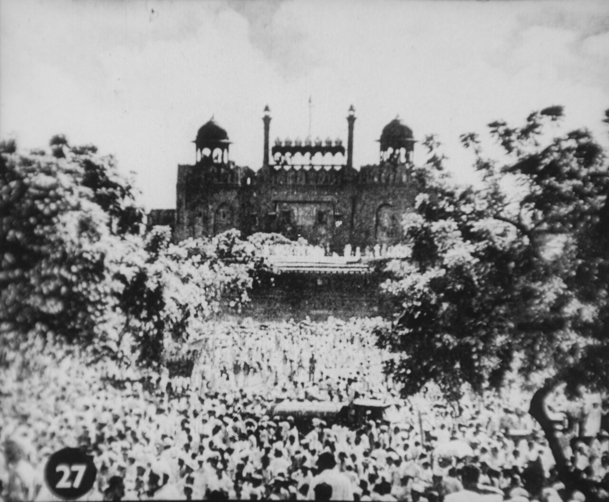
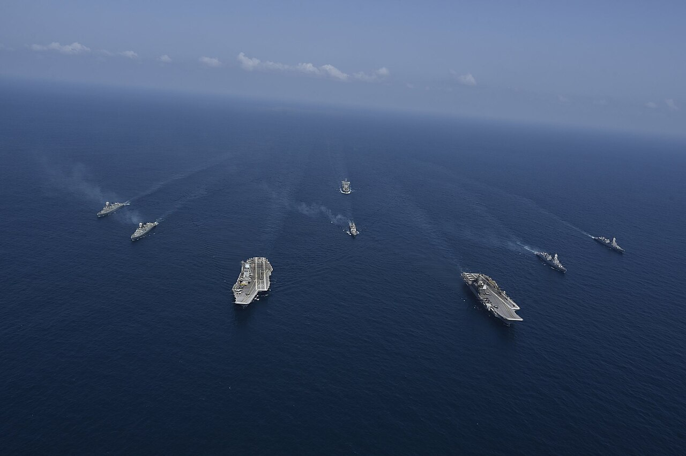

Geopolitics · Strategy
India's Act East Policy: Looking to the Pacific Rim

For much of its independent history, India faced west and north — toward the Gulf, the West, and its troubled land borders. Then it turned east, toward the dynamic economies of the Pacific Rim. That pivot, begun as Look East, has matured into Act East.
From looking to acting
Launched in the early 1990s as India opened its economy, the Look East policy sought trade and investment from a booming Southeast Asia. In 2014 it was rebranded Act East — a signal that engagement would move from rhetoric to roads, ports, exercises and diplomacy.[1]
Geography and history both point east from India's north-east.
ASEAN at the centre

The ten-nation ASEAN bloc is the policy's heart. India is a dialogue partner, joins the East Asia Summit, and treats Southeast Asia as both a market and a strategic buffer in the contest over the Indo-Pacific.
Connectivity and culture
Act East is built in concrete and memory alike: highways toward Myanmar and Thailand, a shared Buddhist and maritime heritage, and a diaspora that links India to the region. Geography and history both point east from India's north-east.
The security dimension
As China presses in the South China Sea, India's partners in Vietnam, Singapore, Indonesia and Japan have welcomed a larger Indian naval presence. Act East is increasingly an answer to the same question the String of Pearls poses.
Why it matters
Act East turns India's neglected north-east into a frontier of opportunity and ties the country's future to the world's fastest-growing region — a deliberate widening of India's strategic horizon.
Sources & further reading
- "Act East Policy," Wikipedia.
All images via Wikimedia Commons, used under the licences shown on each file page.